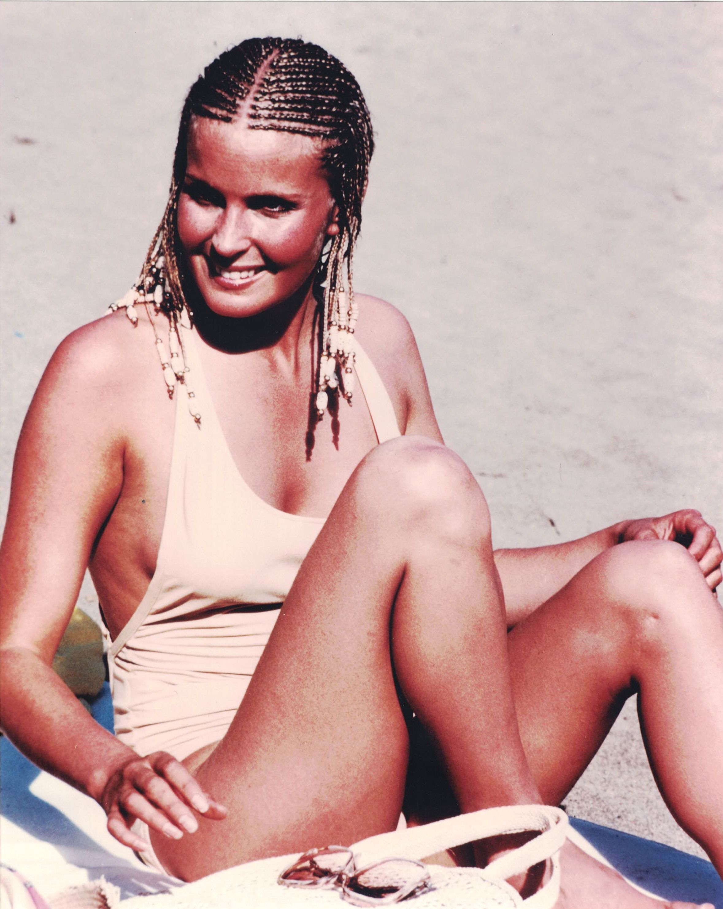

Product No. HEC-0051
$14.99
Shipping: $8.95
Description
8x10 color photograph
Full Description
Bo Derek is an American actress, model, and producer who became an international sex symbol after starring in the hit romantic comedy "10" (1979). Born Mary Cathleen Collins on November 20, 1956, in Long Beach, California, she began working in film while still a teenager. Derek achieved worldwide fame playing Jenny Hanley in "10," opposite Dudley Moore and Julie Andrews. Her appearance in the film, particularly the famous beach sequence in which she wore her hair in cornrow braids, became one of the most recognizable images of late-1970s popular culture. She later starred in several films directed by her husband, John Derek, including "Tarzan, the Ape Man," "Bolero," and "Ghosts Can't Do It." Although some of these movies received poor critical reviews, Derek remained a highly recognizable celebrity and continued appearing in films, television programs, and magazines. Her other screen work has included "Orca," "A Change of Seasons," "Tommy Boy," and guest appearances on numerous television series. Beyond acting, Derek has been involved in animal welfare and veterans' causes and has served on organizations supporting military veterans and horse protection. Bo Derek's association with "10" and her status as a major pop-culture figure of the 1970s and 1980s have made her photographs, movie memorabilia, and autographs popular with collectors of Hollywood and celebrity memorabilia.
Condition
Excellent condition